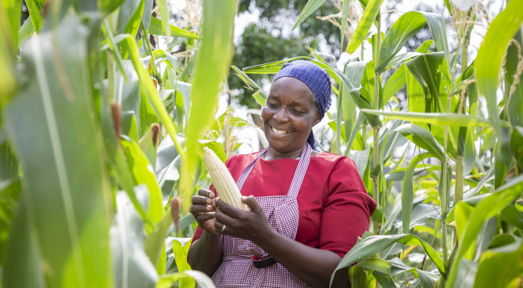
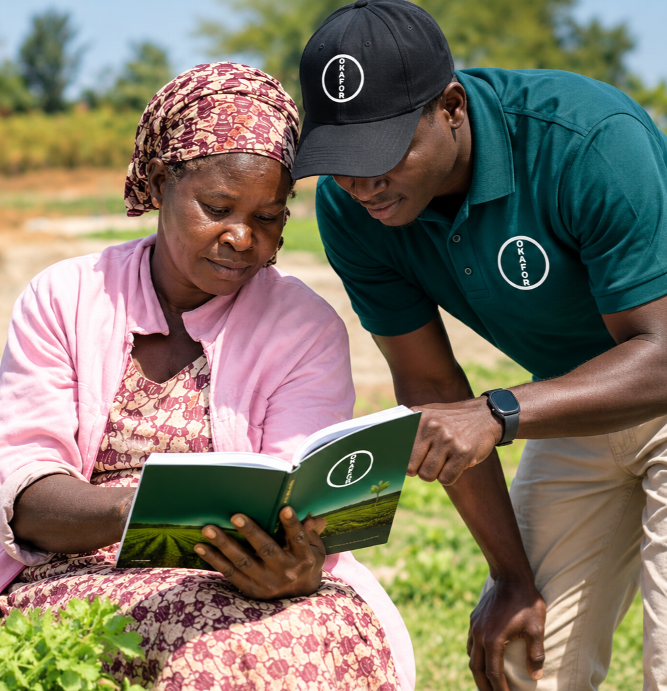
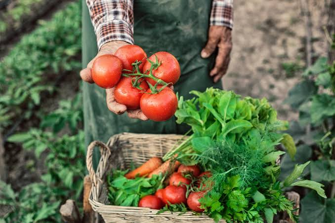
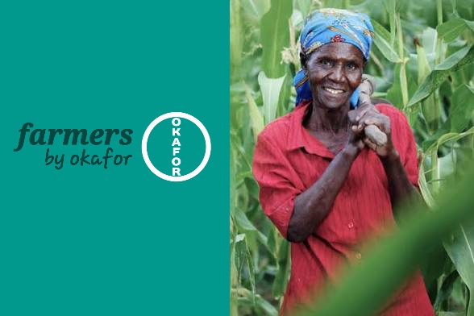

01
Crop Protection
Solutions for managing weeds, pests and crop diseases throughout the growing season.
Explore Crop ProtectionC.G. OKAFOR CO. / OUR BUSINESSES
Science that nourishes.
Agricultural solutions that support farmers, strengthen food production and contribute to a more productive agricultural sector.
Explore Our Focus AreasOUR AGRISCIENCE BUSINESS
Okafor Agriscience is the agricultural solutions business of C.G. Okafor Co. It brings together products and solutions designed to help farmers manage crop production, nourish plants, access quality seeds and support animal health.
Our focus is on practical agricultural needs and the role that reliable solutions play in farming, food production and the wider agricultural value chain.
WHAT WE DO
Explore the key areas through which Okafor Agriscience serves agricultural production.

01
Solutions for managing weeds, pests and crop diseases throughout the growing season.
Explore Crop Protection02
Fertilizer and plant nutrition solutions designed to support crop growth and productive farming.
Explore Plant Nutrition
03
Field and vegetable seed solutions to support different crops, farming systems and production needs.
Explore Seeds
04
Animal health solutions supporting livestock management, poultry production and swine farming.
Explore Animal Health
BUILT AROUND FARMING
Farming is central to food production. We believe agricultural solutions should respond to real production needs and help farmers work towards stronger, more reliable outcomes.
Discover Farmers by OkaforEXPLORE OUR SOLUTIONS
Visit our specialist Agriscience website to explore the available products and solutions across our focus areas.
Visit Agriscience WebsiteScience that nourishes.